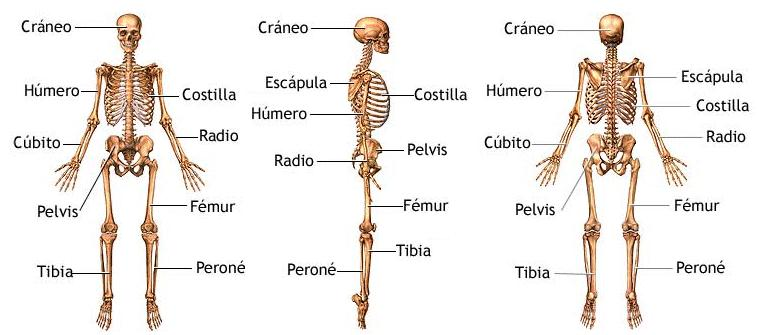

Dentro de la amplia gama de huesos que componen el esqueleto humano destacan aquellos que desempeñan roles fundamentales en la estructura y función del organismo. A continuación, enumeramos algunos de los principales huesos.
Cráneo
Este es el hueso más resistente del cuerpo humano y cumple la función vital de resguardar el órgano más crucial: el cerebro.
Costillas
Las costillas, dispuestas en pares simétricos en el torso, forman la caja torácica proporcionando protección a los pulmones y al corazón.
Cúbito y radio
Estos huesos constituyen los principales del antebrazo extendiéndose de manera paralela y conectando los huesos de la mano con los del brazo.
Húmero
Como hueso principal del brazo, el húmero conecta los huesos del antebrazo con los del hombro.
Escápula
También conocida como omóplato, es un hueso plano y triangular ubicado en la parte posterior del tórax. Desempeña un papel importante al brindar soporte y movilidad al brazo a la vez que protege estructuras vitales en la región del hombro. La escápula se conecta con la clavícula y el húmero facilitando la articulación y el movimiento coordinado de la extremidad superior.
Columna vertebral
La columna vertebral compuesta por vértebras que se extienden desde la nuca hasta la pelvis, desempeña la función de proteger la médula espinal principal vía del sistema nervioso.
Pelvis
Es la región anatómica inferior del tronco. La forman el hueso sacro, el cóccix y los coxales. La pelvis conecta la columna vertebral con los huesos de los miembros inferiores.
Fémur
Hueso superior de la pierna destaca por ser el más largo del cuerpo humano.
Tibia y peroné
Estos huesos ubicados en la parte inferior de la pierna se extienden de manera paralela y conectan el fémur con los huesos del pie.

Imagen LeonardoRea disponible en Wikimedia Commons
{kind=link}